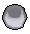
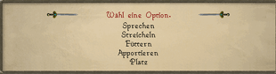

")
Haustiere
Um weitere Informationen über interessant Haustiere zu erhalten, lest bitte den Artikel Beschwörung - Haustiere.
Katzen

Wo man eine Katze bekommt

Wenn ihr euer Kätzchen verliert oder später ein weiteres möchtet, könnt ihr wieder zu Gertrud gehen - sie wird euch für 100 Goldmünzen eins verkaufen.
Wie man sich um seine Katze kümmert
Grundsätzlich gibt es fünf Katzenarten auf RuneScape: vom Kätzchen über die ausgewachsene, übergroße, gerissene bis hin zur faulen Katze. Wenn ihr möchtet, dass euer Kätzchen wächst und sich entwickelt, müsst ihr euch gut darum kümmern. Wenn ihr es nicht füttert oder ihm nicht genug Aufmerksamkeit schenkt, wird es auf Nimmerwiedersehen weglaufen. Zum Glück ist es allerdings sehr einfach, sich um seine Katze zu kümmern.
Kätzchen können mit Fisch aller Art gefüttert werden - gekocht oder roh (mit Ausnahme von gewürzten Sardinen - vom Leibgericht ihrer Mutter halten sie wenig) und ansonsten natürlich mit Milch. Bitte beachtet, dass Seegras, ob nun essbar oder nicht, kein Fisch ist. Kätzchen fressen auch die Ratten, die sie selbst gefangen haben, allerdings sind sie in diesem Stadium noch zu jung, um es oft zu schaffen - weshalb ihr gut beraten seid, immer etwas Fisch oder Milch dabeizuhaben.

Alle Katzen lieben es, Ratten zu jagen. Das lässt sich arrangieren, sobald ihr normale Ratten mit Stufe 1 herumlaufen seht. Rechtsklickt einfach auf eure Katze, wählt erst 'Beschäftigen mit' und dann 'Ungeziefer jagen'. Kätzchen sind nicht besonders gut darin, Ratten zu jagen, aber als ausgewachsene Katzen gelingt ihnen das schon öfter und wenn sie gerissene Katzen sind, sind sie darin sogar noch besser.
Wenn ihr eure Katze lieber von flohverseuchten Ratten fernhalten möchtet, könnt ihr in euer Spielerhaus gehen und in der Werkstatt ein paar Spielzeugmäuse herstellen. Eure Katze wird diese genau wie normale Ratten jagen. Seid aber vorgewarnt, dass die Mäuse dabei zerstört werden, also solltet ihr lieber ein paar mehr bauen, wenn ihr eure Katze auf diese Weise trainieren möchtet.
Solange sich eure Katze im Inventar oder in der Bank befindet, kann sie nicht wachsen, also müsst ihr sie mit hinaus in die Welt nehmen, damit sie sich entwickeln kann. Wenn euer Kätzchen lange genug aktiv war (also nicht in eurem Inventar oder eurer Bank), wird es sich in eine ausgewachsene Katze verwandeln. Diese können Ratten besser fangen und müssen nicht mehr gefüttert oder mit Aufmerksamkeit verwöhnt werden.
![[Bild]](../../img/main/kbase/minigames/ratpits/kitten1.gif) Kätzchen |
![[Bild]](../../img/main/kbase/minigames/ratpits/cat1.gif) Katze |
![[Bild]](../../img/main/kbase/minigames/ratpits/overgrowncat1.gif) Übergroße Katze |
![[Bild]](../../img/main/kbase/minigames/ratpits/wileycat1.gif) Gerissene Katze |
![[Bild]](../../img/main/kbase/minigames/ratpits/lazycat1.gif) Faule Katze |
Wenn noch mehr Zeit verstrichen ist, wird eure Katze zu einer übergroßen Katze. Diese können Ratten nur in den Rattengruben fangen und werden sich erst in eine gerissene Katze verwandeln, wenn ihr sie von Wida Lich, in der Rattengrube von Port Sarim, trainieren lasst.
Bitte beachtet: Eure übergroße Katze kann erst zu einer gerissenen Katze werden, wenn ihr das Abenteuer 'Die Rattenfänger' abgeschlossen habt.
Gerissene Katzen sind die idealen Jäger und können zudem auch noch sehr schnell laufen. Wenn eure Katze zu einer mächtigen gerissenen Katze wird, lernt sie auch, wie sie andere Tiere außer Ratten jagen kann: Kalphiten-Larven (im Verlies der Kalphiten) und Schmetterlinge. Wenn eure Katze allerdings nicht oft genug trainiert wird, wird sie zu einer faulen Katze.
Faule Katzen sind nicht so geschickt und beweglich wie gerissene Katzen und können nur Ratten jagen, aber wenn man sie trainiert, werden sie wieder zu gerissenen Katzen. Ihr müsst also nur etwas Zeit mit eurem Faulpelz verbringen, damit er ein paar Pfunde verliert, und schon sollte er sich wieder in eine gerissene Katze verwandeln. Je mehr Zeit ihr auf einen Schlag damit verbringt, eure faule Katze zu trainieren, desto schneller wird sie wieder zu einem ausgewachsenen Energiebündel.
Solltet ihr je eures Kätzchens oder eurer Katze überdrüssig werden, könnt ihr sie loswerden, indem ihr auf sie rechtsklickt, dann 'Beschäftigen mit' und dann 'Wegscheuchen' auswählt. Wenn ihr das tut, wird eure Katze niemals zurückkehren, also solltet ihr euch vorher sicher sein, dass ihr das auch wirklich wollt.
Ihr könnt viele Katzen gleichzeitig besitzen, aber einige Beschränkungen müsst ihr beachten. Ausgewachsene Katzen dürft ihr so viele haben, wie ihr wollt, solange ihr mit ihnen fertig werdet, aber jeweils nur ein Kätzchen oder eine ausgewachsene Katze und nur eine gerissene oder faule Katze.
Empfohlene Ausrüstung
![[Bild]](../../img/main/kbase/minigames/ratpits/amulet_of_catspeak.gif) |
Das Amulett der Katzensprache Um das Amulett der Katzensprache zu erhalten, müsst ihr das Abenteuer 'Icthlarins Helferlein' abgeschlossen haben. Dieser Gegenstand ist wohl der wertvollste schlechthin für alle Katzenbesitzer. Damit kann man nicht nur mit seiner eigenen Katze kommunizieren, sondern auch mit jeder anderen Katze auf RuneScape. Wenn ihr es dazu noch verzaubern lasst (von Hilde, gegen Anfang des Abenteuers 'Zwei Katzen, ein Ausgang'), könnt ihr mit seiner Hilfe auch den Aufenthaltsort von Bob der Jagex-Katze bestimmen - der hat immer einen Witz parat! Wenn ihr euer Amulett der Katzensprache verloren habt, wird euch die Sphinx in Sophanem ein weiteres geben - aber nur, wenn ihr auch eine Katze dabeihabt. Um das Amulett verzaubern zu lassen, müsst ihr Hilde in Burthorpe einen Besuch abstatten. |
![[Bild]](../../img/main/kbase/guides/pet/ring_of_charos_unlocked.gif) |
Ring des Charos (verzaubert) Um den Ring des Charos zu aktivieren, müsst ihr die Abenteuer 'Fenkenstrains Kreatur' und 'Der Garten der Stille' abgeschlossen haben. Dieser Ring gibt euch die Möglichkeit, die Farbe eures Kätzchens auszuwählen, wenn ihr eins bei Gertrud kauft. Klickt einfach auf '(Bann) Kann ich mir meine Katze bitte selbst aussuchen?' wenn Gertrud euch fragt, ob ihr ein neues Kätzchen möchtet. Dann habt ihr die Qual der Wahl zwischen sechs entzückenden Kätzchen in verschiedenen Farben. Wenn ihr den Ring des Charos (verzaubert) verloren habt, müsst ihr ihn noch einmal aus Fenkenstrains Schloss stehlen. |
![[Bild]](../../img/main/kbase/guides/pet/mousetoy.gif) |
Spielzeugmaus Ihr müsst das Abenteuer 'Zwei Katzen, ein Ausgang' abgeschlossen haben, um Zugang zu einer Spielzeugmaus zu erhalten. Diese ist zwar keine besonders effektive Waffe, aber wenn ihr sie in der Hand haltet und damit herumlauft, könnt ihr zumindest eure Katze unterhalten. Katzen finden es unwiderstehlich, wie das Spielzeug hin- und herspringt, genau wie eine echte Maus. Wenn ihr eure Spielzeugmaus verloren habt, geht wieder zu Bob und er wird euch eine neue geben. Und vergesst nicht euer Amulett der Katzensprache, sonst könnt ihr nicht mit ihm sprechen! |
Was man sonst noch mit Katzen machen kann
Wenn ihr euch die Zeit nehmt, mit eurer Katze zu reden (dafür braucht ihr natürlich euer Amulett der Katzensprache), wird sie euch sagen, was genau sie unternehmen möchten. Die meisten Katzen möchten jagen gehen und sagen dann auch, wo sie gern jagen möchten. Ihr und eure Katze seid allerdings nicht darauf beschränkt, Ratten in Kanalisationen und auf Straßen zu jagen - ihr könnt es ja mal mit diesen Möglichkeiten versuchen:Die Rattengruben
Die Rattengruben sind ein Minispiel, in dem eure Katze die Katze eines anderen Spielers herausfordert, um herauszufinden, welche Katze der bessere Rattenfänger ist.
Bitte beachtet: Je nachdem, wie ihr spielt, kann eure Katze in den Rattengruben sterben.
Die Katzendressur-Medaille
Falls eure Katze es schafft, 100 Ratten zu fangen, bevor sie zu einer übergroßen Katze wird, bringt sie zu Gertrud, um dieses wunderbare Andenken an eure Leistung zu erhalten. Tragt sie mit Stolz!
Wie man Katzen Namen gibt
Wida Lich, die in den Rattengruben in Port Sarim arbeitet und eine übergroße Katze zu einer gerissenen Katze trainieren kann, kann gerissenen und faulen Katzen außerdem Namen geben oder bereits vorhandene Namen ändern (diese dürfen bis zu sechs Buchstaben lang sein). Um eurer Katze einen Namen geben zu lassen, müsst ihr das Abenteuer 'Die Rattenfänger' abgeschlossen haben.
Wie man Katzen verkauft
Obwohl viele liebevolle Katzenbesitzer das für eine Schandtat halten, ist es möglich, seine Katze zu verkaufen. Die armen Bewohner von West-Ardougne verdienen nämlich ihr täglich Brot damit, Ratten zu fangen, und geben euch deshalb 100 Jenseits-Runen für eine ausgewachsene, übergroße, gerissene oder faule Katze. Abenteurer, die alle einfachen Aufgaben in Ardougne abgeschlossen haben, bekommen sogar 200 Jenseits-Runen angeboten. Da Kätzchen als Rattenjäger nicht sonderlich begabt sind, kaufen die Bürger von West-Ardougne sie nicht.
Höllenkatzen

Höllenkatzen unterscheiden sich grundsätzlich nicht von normalen Katzen. Sie haben genau dieselben Beschränkungen und Stärken und ein Höllenkätzchen wird zu einer Höllenkatze heranwachsen. Eine gerissene Höllenkatze kann auch zu einer faulen Höllenkatze werden. Der einzige Unterschied besteht darin, dass wenn ihr ein Amulett der Katzensprache habt, ihr bemerken werdet, dass eure Katze ganz schön böse geworden ist und euch genau sagt, was sie von euch hält.
Wenn ihr doch eine freundlichere Katze bevorzugt, könnt ihr das Ganze rückgängig machen, indem ihr eurer Katze etwas Milch zu trinken gebt.
Berühmte Katzen RuneScapes
In ganz RuneScape gibt es jede Menge Katzen. Auf euren Reisen werdet ihr einigen von ihnen begegnen und wenn ihr das wichtige Accessoire, das Amulett der Katzensprache, bei euch habt, könnt ihr euch mit ihnen unterhalten und erfahren, was sie gerade so machen. Dies sind ein paar der berühmteren Katzen:![[Bild]](../../img/main/kbase/npc/chathead/fluffs.gif) |
Puschel Puschel ist Gertruds Katze und die erste Katze, mit der ihr in eurer Karriere als Katzenbesitzer und -erzieher zu tun haben werdet. Puschel ist auch die Katze, die all die Kätzchen bekommt, die man von Gertrud kaufen kann. Wenn sie nicht gerade damit beschäftigt ist, ihre eigenen Kätzchen großzuziehen, verbringt sie ihre Freizeit gerne in den Rattengruben von Varrock. |
![[Bild]](../../img/main/kbase/npc/chathead/bob_the_cat.gif) |
Bob die Jagex-Katze Ohne Bob kann man sich RuneScape einfach nicht vorstellen. Viele Leute sind ständig auf der Suche nach ihm und seiner besonderen Art von 'Humor'. Leicht ist er allerdings nur mit dem Amulett der Katzensprache zu finden. Wenn ihr ihn geortet habt, solltet ihr euch auf den Weg zu ihm machen - die Reise wird sich lohnen. |
![[Bild]](../../img/main/kbase/npc/chathead/neite.gif) |
Neite Neite ist für Bob etwas ganz Besonderes und dieser Fakt allein macht sie schon zu einer Berühmtheit. Familienverhältnisse sind ihr wichtig, um festzustellen, ob jemand aus gutem Hause kommt, also seid darauf vorbereitet, dass sie euch ignorieren wird. |
![[Bild]](../../img/main/kbase/npc/chathead/evil_bob.gif) |
Böser Bob Der Böse Bob ist ein heimtückischer Halunke. Auf unserer Seite Zufällige Ereignisse könnt ihr alles über seine Missetaten erfahren und wie ihr seinen Klauen im Notfall wieder entkommen könnt. |
![[Bild]](../../img/main/kbase/npc/chathead/sphinx1a.gif) |
Die Sphinx Die Sphinx ist, wie man das erwarten würde, ein mysteriöses Wesen. Von ihrem Zuhause in Sophanem aus wacht sie über alle Katzen RuneScapes und hilft euch, wenn ihr selbst eine Katze oder ein Kätzchen habt - auch wenn sie sonst nicht viel von Menschen hält. |
Fische
Nicht nur Katzen kann man auf RuneScape als Haustiere halten und diejenigen unter euch, die besonders tierlieb sind, möchten vielleicht ausprobieren, welch ein Vergnügen es ist, einen Fisch zu besitzen. Da Fische nicht besonders viel Arbeit machen, geben sie gute Haustiere für Abenteurer ab, die sich nicht sicher sind, ob sie sich um ein größeres Tier wie ein Kätzchen angemessen kümmern können.
Das Fischglas
 Fischgläser sind zwar handelbar, aber man benötigt Handwerk auf Stufe 42, um eins herzustellen. Der Vorgang an sich ist ganz einfach und ihr könnt unter Handwerk - Glasbläserei alles darüber nachlesen.Um das Ganze aber noch mal zusammenzufassen, benötigt ihr einen Eimer Sand und etwas Natriumkarbonat, um das geschmolzene Glas zu erhalten. Dann braucht ihr noch eine Glasbläserpfeife, um das geschmolzene Glas in ein Fischglas zu verwandeln.
Natürlich könnt ihr euren Fisch nicht einfach in dem Fischglas platzieren - erst müsst ihr das Glas vorbereiten, damit euer Fisch sich nicht einsam fühlt oder sich langweilt. Als Erstes müsst ihr - das ist offensichtlich - das Fischglas mit Wasser füllen. Dann müsst ihr etwas Seegras besorgen, das ihr in das Fischglas legt, damit euer Fisch sich darin verstecken kann (Fische bekommen es nämlich schnell mit der Angst zu tun).

Klickt auf 'Kann ich einen Fisch für dieses Fischglas bekommen?', dann wird Harry euch eins seiner kleinen Netze für 10 Goldmünzen anbieten, mit dem ihr euch einen Fisch aus seinem Tank holen könnt.
Sobald ihr alles vorbereitet habt, werdet ihr merken, dass es eigentlich ganz einfach ist:
Leeres Fischglas |
+ | Wasser |
= | ![[Bild]](../../img/main/kbase/guides/pet/fishbowl_water1.gif) Fischglas mit Wasser |
Fischglas mit Wasser |
+ | ![[Bild]](../../img/main/kbase/items/misc/seaweed.gif) Seegras |
= | ![[Bild]](../../img/main/kbase/guides/pet/fishbowl_seaweed1.gif) Bewohnbares Fischglas |
Bewohnbares Fischglas |
+ | ![[Bild]](../../img/main/kbase/guides/pet/small_net.gif) Kleines Netz |
= | ![[Bild]](../../img/main/kbase/guides/pet/fishbowl_fish_blue1.gif) Fisch im Fischglas! |
Es gibt drei Fischarten, die man sich als Haustiere halten kann: einen blauen Fisch, einen grünen und einen Kaninchenfisch. Zwischen den Fischen gibt es an sich keinen Unterschied, außer dass die eine Art etwas gewöhnlicher ist als die andere. Es gibt keine obere Grenze, die besagt, wie viele Fische ihr besitzen dürft - es hält euch also nichts davon ab, dass ihr euch alle Arten anschafft!
Was man mit einem Fisch anfangen kann
![[Bild: Optionen zur Beschäftigung mit Fischen]](../../img/main/kbase/guides/pet/fish_options1.gif "Optionen zur Beschäftigung mit Fischen") Obwohl euer Fisch anscheinend damit zufrieden ist, in seinem Fischglas umherzuschwimmen und alle Verstecke im Seegras auskundig zu machen oder an ihm herumzuknabbern, kann man viel mehr mit ihm machen, als ihm nur beim Spielen zuzuschauen. Wenn ihr auf euer Fischglas rechtsklickt, erhaltet er ein Menü mit den folgenden Optionen:
Obwohl euer Fisch anscheinend damit zufrieden ist, in seinem Fischglas umherzuschwimmen und alle Verstecke im Seegras auskundig zu machen oder an ihm herumzuknabbern, kann man viel mehr mit ihm machen, als ihm nur beim Spielen zuzuschauen. Wenn ihr auf euer Fischglas rechtsklickt, erhaltet er ein Menü mit den folgenden Optionen: Diese Optionen sprechen eigentlich für sich, aber hier sind noch ein paar Hinweise, die ihr beachten solltet.
- Um euren Fisch zu füttern, braucht ihr natürlich Fischfutter. Dieses findet ihr entweder, wenn ihr auf Entdeckungsreise im Herrenhaus von Draynor geht, oder es selbst herstellt. Dazu müsst ihr noch einmal mit Harry sprechen und ihn nach Fischfutter fragen. Er wird euch sagen, dass er keins hat, dafür aber einen leeren Karton hat, auf dem die Zutaten aufgelistet sind.
![[Bild]](../../img/main/kbase/guides/pet/fishfood2.gif) Um Fischfutter herzustellen, müsst ihr die Zutaten zermahlen, also solltet ihr einen Mörser und Stößel bereithalten. Sobald ihr die Zutaten zermahlen habt, benutzt sie mit dem Karton, um ihn zu füllen. In eurem Karton könnt ihr nur genug Futter für eine Mahlzeit aufbewahren, also solltet ihr vorsorglich schon mal mehr Zutaten besorgen, damit ihr den Karton wieder auffüllen könnt, nachdem ihr euren Fisch gefüttert habt.
Um Fischfutter herzustellen, müsst ihr die Zutaten zermahlen, also solltet ihr einen Mörser und Stößel bereithalten. Sobald ihr die Zutaten zermahlen habt, benutzt sie mit dem Karton, um ihn zu füllen. In eurem Karton könnt ihr nur genug Futter für eine Mahlzeit aufbewahren, also solltet ihr vorsorglich schon mal mehr Zutaten besorgen, damit ihr den Karton wieder auffüllen könnt, nachdem ihr euren Fisch gefüttert habt.
- Wenn ihr die Option 'Fallen lassen' auswählt, wird das Fischglas auf dem Boden zerschmettern, der arme Fisch wird das Zeitliche segnen und ihr werdet keine Gesellschaft mehr haben. Da man mit Fischen, die man als Haustiere hält, nicht handeln kann, solltet ihr es euch gut überlegen. Schließlich ist das ein tragisches Ende für ein Haustier, das einem so viel Freude bereiten kann.
Zahme Steine
Ihr müsst einen bestimmten Schritt im Abenteuer 'Die Fremennik'schen Proben'' erreicht haben, um einen zahmen Stein zu erhalten.
 Da Katzen so viel Pflege bedürfen und Fische nicht viel machen, außer im Kreis zu schwimmen, interessiert euch vielleicht ein Haustier der anderen Art, das ihr im kühlen Norden in der Provinz der Fremennik finden könnt: einen zahmen Stein. Dieses gehorsame und liebevolle Haustier kann euch stundenlang unterhalten und hält in gefährlichen Situationen außerdem noch als eine gute Waffe her.
Da Katzen so viel Pflege bedürfen und Fische nicht viel machen, außer im Kreis zu schwimmen, interessiert euch vielleicht ein Haustier der anderen Art, das ihr im kühlen Norden in der Provinz der Fremennik finden könnt: einen zahmen Stein. Dieses gehorsame und liebevolle Haustier kann euch stundenlang unterhalten und hält in gefährlichen Situationen außerdem noch als eine gute Waffe her. Wie man sich um seinen zahmen Stein kümmert
Ein zahmer Stein ist ein anspruchsloses Haustier, das schon glücklich ist, allein, weil es einen Besitzer hat. Deshalb müsst ihr den Stein weder füttern noch ihn trainieren.Was man mit einem Stein anfangen kann
Um zu sehen, was ihr mit eurem Stein alles machen könnt, müsst ihr auf ihn klicken und die Option 'Beschäftigen mit' auswählen. Dann habt ihr die folgende Auswahl:

Falls ihr euren zahmen Stein jemals verlieren solltet (oje!), könnt ihr einen weiteren erhalten, indem ihr mit Askeladden in Rellekka sprecht.
Berühmte Urgesteine RuneScapes
![[Bild]](../../img/main/kbase/guides/pet/ancient_rock.gif) |
Der uralte Felsen Da man seinen ersten zahmen Stein von einem Fremennik erhält, überrascht es nur wenig, dass die Leute im Berglager östlich der Provinz der Fremennik diesen riesigen und uralten Stein verehren. Dieser Felsen ist wirklich steinalt und es kann durchaus sein, dass euer eigener Stein ein Nachfahre dieses ehrwürdigen (wenn auch schweigsamen) Urgesteins ist. |
![[Bild]](../../img/main/kbase/guides/pet/dondakan_s_rock.gif) |
Dondakans Felsen Niemand kann von sich behaupten, schon mal einem härteren Stein als diesem begegnet zu sein. Im Abenteuer 'Ein Fels in der Brandung' trefft ihr auf ihn und seinen sturen Charakter. Nach all dieser Zeit müssen der Zwerg und der Stein wohl eine Art Hassliebe zueinander entwickelt haben - etwas, über das ihr und euer Stein sich keine Gedanken machen müssen. |
![[Bild]](../../img/main/kbase/guides/pet/falador_rocks.gif) |
Die Felsen von Falador Niemand weiß, wo diese Felsen herkommen oder wer ihre tolle graue, steinige Farbe mit diesen albernen Symbolen übermalt hat. Nördlich von Falador stehen sie mysteriös herum und verdutzen alle, die dort vorbeikommen. |
![[Bild]](../../img/main/kbase/npc/chathead/golem.gif) |
Der Golem Na gut, ein richtiger Stein ist der Golem nicht, schließlich besteht er aus Ton. Aber trotzdem ist er unter den Steinwesen RuneScapes immerhin der redseligste, also muss er einfach erwähnt werden. Wenn ihr also wissen möchtet, was ein Stein so zu sagen hat, solltet ihr das Abenteuer 'Der Golem' beginnen. |
![[Bild]](../../img/main/kbase/guides/pet/slagilith.gif) |
Der Slagilith Nicht alle Steine, die ihr draußen in der Welt trefft, sind so freundlich oder so charmant wie euer zahmer Stein. Der Slagilith ist dafür das perfekte Beispiel. Wenn ihr ihn im Abenteuer 'Ein kleiner Gefallen' kennenlernt, solltet ihr euch darauf gefasst machen, dass kein Stein auf dem anderen bleibt! |
![[Bild]](../../img/main/kbase/guides/pet/rock_crab.gif) |
Felskrabben Einige Monster auf RuneScape nutzen den guten Ruf von Steinen und Felsen für sich aus, um ihre Beute zu täuschen. Das bekannteste Exemplar unter diesen Wesen ist die Felskrabbe und jeder Steinliebhaber, der etwas auf sich hält, sollte es schaffen, bescheidene und großzügige Felsen von boshaften und hinterlistigen Felskrabben zu unterscheiden. |
Runen-Wächter

Der Kleine isst kein normales Haustierfutter. Ihr müsst ihn an einem der Runen-Altäre aufladen. Dadurch ernährt ihr euren Runen-Wächter, der die Farbe der gerade verzehrten Runen-Energie annimmt. Besorgt eurem neuen Freund also am Feuer-Altar eine warme Mahlzeit oder gebt ihm bodenständige Hausmannskost am Erd-Altar. Vielleicht mag er aber auch die metallische Note des Blut-Altars oder bevorzugt die große Auswahl im Ourania-Altar. Ihr könnt euch einen neuen, grauen Runen-Wächter besorgen, indem ihr den 'alten' in der Menagerie eures Hauses aufbewahrt (oder ihn wegschickt) und dann mit Clerval im Keller der Schule der magischen Künste sprecht.
Mithilfe der Runen-Wächter könnt ihr auch die Farbe eurer Phantom-Roben ändern. Bringt die Roben und euer Haustier zu einem der vier Elementar-Altäre (Luft, Wasser, Erde oder Feuer) und benutzt die Roben mit dem Altar. Wenn ihr die Kleidung wieder in ihren Normalzustand versetzen wollt, benutzt sie einfach mit eurem Runen-Wächter.
Zahntiere

Wenn ihr wirklich eines dieser... Dinger... wollt, müsst ihr nach Abschluss des Abenteuers Ein Feenmärchen III mit der Zahnfee sprechen und sie in Zähnen bezahlen. Ihr benötigt einen Suqah-Zahn (von der Mondinsel), einen alten Zahn (von der Ausgrabungsstätte), einen menschlichen Milchzahn (aus Gertruds Haus in Varrock), ein paar Kebbitzähne (die ihr einem hilfsbereiten Säbelzahn-Kebbit abjagen müsst) und ein Affengebiss (vom Affenatoll).

Weitere Artikel in Diverse Anleitungen
|
|
|
Weiterführende Informationen Wenn euch dieser Artikel nicht weitergeholfen hat, könnt ihr in den folgenden Kapiteln der RuneScape-Webseite mehr Informationen finden:
|
|